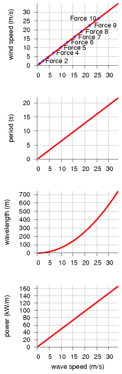
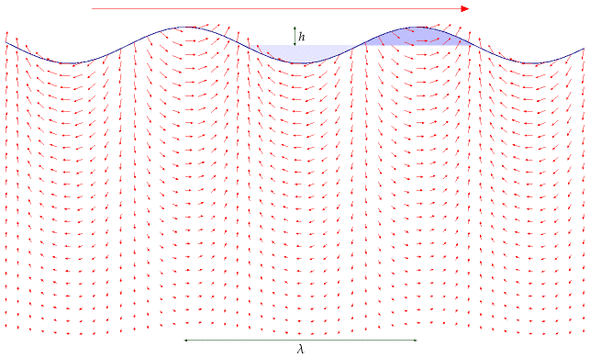

F Waves II

Figure F.1. Facts about deep-water waves. In all four figures the horizontal axis is the wave speed in m/s. From top to bottom the graphs show: wind speed (in m/s) required to make a wave with this wave speed; period (in seconds) of a wave; wavelength (in m) of a wave; and power density (in kW/m) of a wave with amplitude 1 m.
The physics of deep-water waves
Waves contain energy in two forms: potential energy, and kinetic energy. The potential energy is the energy required to move all the water from the troughs to the crests. The kinetic energy is associated with the water moving around.
People sometimes assume that when the crest of a wave moves across an ocean at 30miles per hour, the water in that crest must also be moving at 30miles per hour in the same direction. But this isn’t so. It’s just like a Mexican wave. When the wave rushes round the stadium, the humans who are making the wave aren’t themselves moving round the stadium: they just bob up and down a little. The motion of a piece of water in the ocean is similar: if you focused on a bit of seaweed floating in the water as waves go by, you’d see that the seaweed moves up and down, and also a little to and fro in the direction of travel of the wave – the exact effect could be recreated in a Mexican wave if people moved like window-cleaners, polishing a big piece of glass in a circular motion. The wave has potential energy because of the elevation of the crests above the troughs. And it has kinetic energy because of the small circular bobbing motion of the water.
Our rough calculation of the power in ocean waves will require three ingredients: an estimate of the period T of the waves (the time between crests), an estimate of the height h of the waves, and a physics formula that tells us how to work out the speed v of the wave from its period.
The wavelength λ and period of the waves (the distance and time respectively between two adjacent crests) depend on the speed of the wind that creates the waves, as shown in figure F.1. The height of the waves doesn’t depend on the windspeed; rather, it depends on how long the wind has been caressing the water surface.
You can estimate the period of ocean waves by recalling the time between waves arriving on an ocean beach. Is 10 seconds reasonable? For the height of ocean waves, let’s assume an amplitude of 1 m, which means 2 m from trough to crest. In waves this high, a man in a dinghy can’t see beyond the nearest crest when he’s in a trough; I think this height is bigger than average, but we can revisit this estimate if we decide it’s important. The speed of deep-water waves is related to the time T between crests by the physics formula (see Faber (1995), p170):
[v = ]
where g is the acceleration of gravity (9.8 m/s2). For example, if T = 10 seconds, then v = 16 m/s. The wavelength of such a wave – the distance between crests – is λ = vT = gT2/2π = 160 m.

Figure F.2. A wave has energy in two forms: potential energy associated with raising water out of the light-shaded troughs into the heavy-shaded crests; and kinetic energy of all the water within a few wavelengths of the surface – the speed of the water is indicated by the small arrows. The speed of the wave, travelling from left to right, is indicated by the much bigger arrow at the top.
For a wave of wavelength λ and period T, if the height of each crest and depth of each trough is h = 1 m, the potential energy passing per unit time, per unit length, is
\[ \begin{matrix} {P_{\text{potential}} \simeq m^{*}g\overline{h}/T\text{,}} \\ \end{matrix} \]
where m* is the mass per unit length, which is roughly 1⁄2ρh(λ/2) (approximating the area of the shaded crest in figure F.2 by the area of a triangle), and is the change in height of the centre-of-mass of the chunk of elevated water, which is roughly h. So
\[ \begin{matrix} {P_{\text{potential}} \simeq \frac{1}{2}\rho h\frac{\lambda}{2}gh/T\text{.}} \\ \end{matrix} \]
To find the potential energy properly, we should have done an integral here; it would have given the same answer.) Now λ/T is simply the speed at which the wave travels, v, so:
\[ \begin{matrix} {P_{\text{potential}} \simeq \frac{1}{4}\rho gh^{2}v\text{.}} \\ \end{matrix} \]
Waves have kinetic energy as well as potential energy, and, remarkably, these are exactly equal, although I don’t show that calculation here; so the total power of the waves is double the power calculated from potential energy.
\[ \begin{matrix} {P_{\text{total}} \simeq \frac{1}{2}\rho gh^{2}v\text{.}} \\ \end{matrix} \]
There’s only one thing wrong with this answer: it’s too big, because we’ve neglected a strange property of dispersive waves: the energy in the wave doesn’t actually travel at the same speed as the crests; it travels at a speed called the group velocity, which for deep-water waves is half of the speed v. You can see that the energy travels slower than the crests by chucking a pebble in a pond and watching the expanding waves carefully. What this means is that equation (F.4) is wrong: we need to halve it. The correct power per unit length of wave-front is
\[ \begin{matrix} {P_{\text{total}} = \frac{1}{4}\rho gh^{2}v\text{.}} \\ \end{matrix} \]
Plugging in v = 16 m/s and h = 1 m, we find
\[ \begin{matrix} {P_{\text{total}} = \frac{1}{4}\rho gh^{2}v = 40\text{~kW/m.}} \\ \end{matrix} \]
This rough estimate agrees with real measurements in the Atlantic (Mollison, 1986). (See notes, chapter 12.)
The losses from viscosity are minimal: a wave of 9 seconds period would have to go three times round the world to lose 10% of its amplitude.
Real wave power systems
Deep-water devices
How effective are real systems at extracting power from waves? Stephen Salter’s “duck” has been well characterized: a row of 16-m diameter ducks, feeding off Atlantic waves with an average power of 45 kW/m, would deliver 19 kW/m, including transmission to central Scotland (Mollison, 1986).
The Pelamis device, created by Ocean Power Delivery, has taken over the Salter duck’s mantle as the leading floating deep-water wave device. Each snake-like device is 130 m long and is made of a chain of four segments, each 3.5 m in diameter. It has a maximum power output of 750 kW. The Pelamises are designed to be moored in a depth of about 50 m. In a wavefarm, 39 devices in three rows would face the principal wave direction, occupying an area of ocean, about 400 m long and 2.5 km wide (an area of 1 km2). The effective cross-section of a single Pelamis is 7 m (i.e., for good waves, it extracts 100% of the energy that would cross 7 m). The company says that such a wave-farm would deliver about 10 kW/m.
Shallow-water devices
Typically 70% of energy in ocean waves is lost through bottom-friction as the depth decreases from 100 m to 15 m. So the average wave-power per unit length of coastline in shallow waters is reduced to about 12 kW/m. The Oyster, developed by Queen’s University Belfast and Aquamarine Power Ltd [www.aquamarinepower.com], is a bottom-mounted flap, about 12 m high, that is intended to be deployed in waters about 12 m deep, in areas where the average incident wave power is greater than 15 kW/m. Its peak power is 600 kW. A single device would produce about 270 kW in wave heights greater than 3.5 m. It’s predicted that an Oyster would have a bigger power per unit mass of hardware than a Pelamis.
Oysters could also be used to directly drive reverse-osmosis desalination facilities. “The peak freshwater output of an Oyster desalinator is between 2000 and 6000 m3/day.” That production has a value, going by the Jersey facility (which uses 8 kWh per m3), equivalent to 600–2000 kW of electricity.